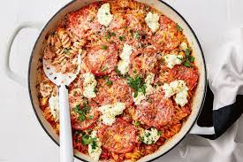
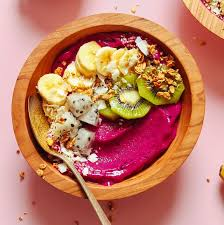
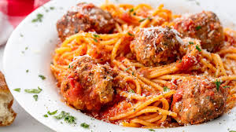
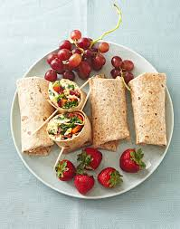

Съвети за Грил

- Подгрейте грила си поне 15 минути предварително.
- Почистете решетката на грила с четка от тел преди готвене.
- Намажете леко решетката или храната с малко масло, за да предотвратите залепване.
Съвети за Печене

- Винаги използвайте съставки на стайна температура за по-добро смесване.
- Измервайте съставките точно с кухненска везна за точни резултати.
- Завъртете тавите за печене на половин път през печенето за равномерно готвене.
Съвети за Задушаване:

- Използвайте олио с висока точка на пушене като канола или растително олио.
- Гответе съставките на парчета, за да избегнете претоварването на тигана.
- Разбърквайте често, за да осигурите равномерно готвене и да предотвратите изгаряне.
Съвети за Умения с Нож

- Дръжте ножа здраво и използвайте захват с когти, за да държите храната.
- Използвайте остър нож за по-сигурни и по-точни резки.
- Практикувайте правилните техники на рязане като нарязване, нарязване и кубиране.
{kind=link}
{kind=link}
{kind=link}
{kind=link}
{kind=link}